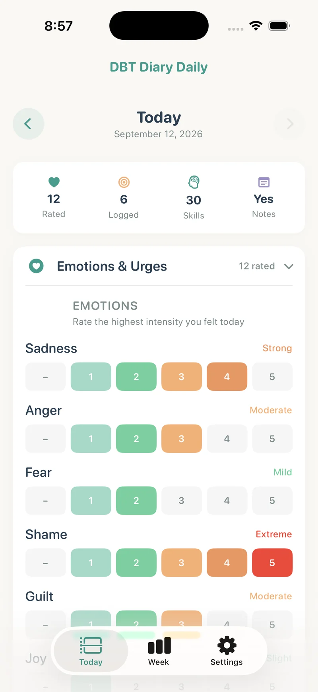
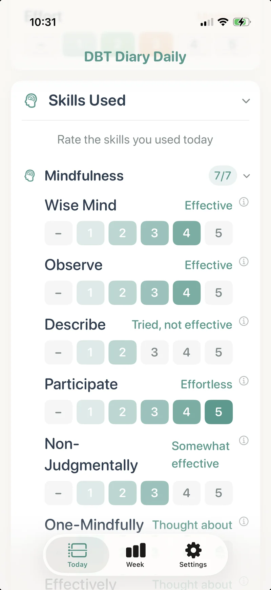
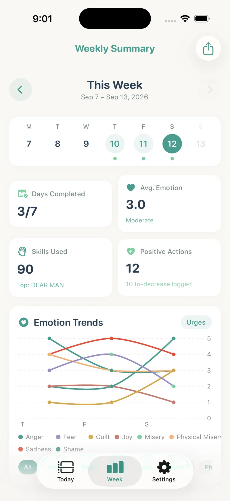
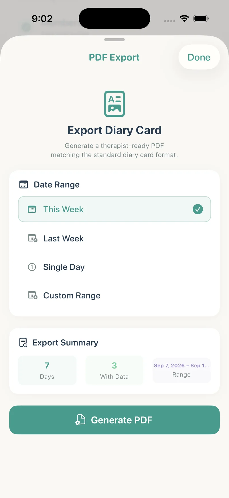
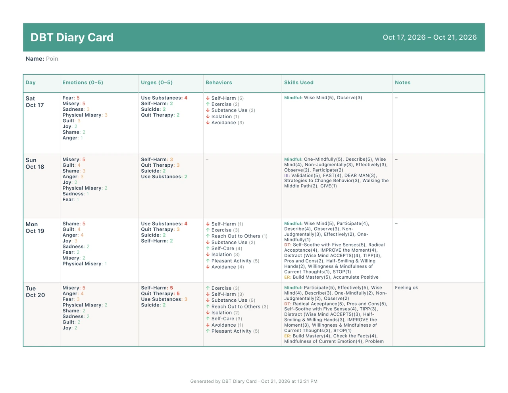

Rate emotions & urges
Record intensity using the app’s ratings and customize labels to suit your diary card.
Explore emotion tracking →DBT diary card app · iPhone & iPad
Track emotions, urges, behaviors, and the DBT skills you practiced. Keep your entries on your device, then bring a clear PDF to therapy.
Free download · Weekly or lifetime full access
See pricing and trial details

One daily record
Less to remember.
More to bring to the conversation.
A diary card helps you record the week between sessions. Choose the fields and rating definitions that fit the plan you and your therapist use.
The daily routine
Make room for what happened, what you tried, and what you want to discuss.
Record intensity using the app’s ratings and customize labels to suit your diary card.
Explore emotion tracking →Log skills across the four DBT modules, including attempts and how useful they felt.
Explore skills tracking →Record behaviors you are working to increase or decrease, with space for context.
Explore the diary card →Add notes, review your weekly summary, and choose what to bring to your appointment.
Build your routine →


PDF export for therapy
Choose a day, a week, or a custom date range and generate a PDF from your diary card. Share it through the iOS share sheet using the method you and your therapist agree on.
There is no therapist portal or automatic monitoring. An exported file can be read by anyone you share it with.

An actual app export
View the daily ratings, behavior and skill entries, and separate notes pages in this sample export supplied by Lean Orbit.
October 17–21, 2026 · 3 pages · PDF · 48 KB

Private daily tracking
Your diary entries are stored on your iPhone or iPad. No app account, developer-hosted diary storage, or in-app analytics. Enable the optional app lock for Face ID, Touch ID, or device-passcode protection.
Apple handles purchases. When you export a file, you choose its destination and who receives it.
Read the privacy policy →Your therapist does not receive entries automatically. Bring the app to your session or send a PDF through an agreed channel.
Information for therapists →Simple purchase options
Free to download. Full access is available through a lifetime purchase or a weekly subscription.
Pay once
$24.99 once
Full access with a one-time purchase. No recurring subscription for this option.
View lifetime optionTry the weekly plan
$3.99 / week
Eligible subscribers can start with a 3-day free trial. The plan renews weekly unless canceled.
View weekly optionUS prices checked October 21, 2026. Prices, taxes, trial eligibility, and offers may vary by region. Confirm the terms shown in the app before purchasing. Payment is charged to your Apple Account. Cancel a subscription at least 24 hours before the current period ends to avoid renewal. Deleting the app does not cancel a subscription.
Purchased the app before version 2.0? You keep full access. See purchase support.
A little help getting started
Practical guides from Lean Orbit, the app’s developer. General education, with sources linked where relevant.
Understand the daily record and how it can fit your sessions.
Daily practiceBuild a short routine around the fields your therapist recommends.
For therapistsConsider fields, privacy, sharing, and the limits of a client-owned app.
Skills practiceKeep useful context about skills between appointments.
Choosing a formatCompare the practical trade-offs for your own routine.
PDF exportSee the export options and steps to share or print your record.
Before you download
An iPhone and iPad app by Lean Orbit LLC for recording emotions, urges, target behaviors, notes, and DBT skills. It is a personal tracking tool you can use alongside professional care.
It is free to download. Full access requires a weekly subscription or a lifetime purchase. Eligible weekly subscribers can start a 3-day trial. See the current US pricing and terms.
Yes. Diary entries are kept on your device without an app account. Apple handles downloads and purchases through your Apple Account.
Yes. Export a single day, a week, or a custom range. Choose a sharing method with your therapist. Entries are not sent automatically.
No. It does not provide medical advice, diagnosis, treatment, or crisis monitoring. Use the fields and scales agreed with your qualified provider.
Your next check-in
Record what happened. Keep the context. Share a PDF when you choose.
Download on the App StoreiPhone & iPad · iOS / iPadOS 17 or later · Free download with paid full access